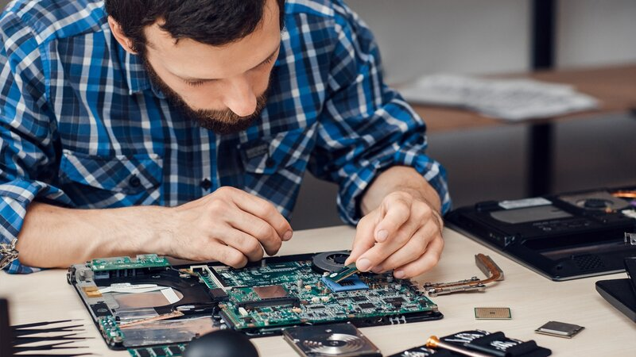

SMJEROVI
Tehničar za računalstvo
Moderan program usklađen s trenutnim tehničkim dostignućima u području računalstva program je fleksibilan u svim strukovnim modulima i predmetima s mogućnošću jednostavne implementacije novih dostignuća velik broj sati laboratorijskih vježbi u svim strukovnim predmetima stavlja temeljni naglasak na praktična znanja i vještine polaznika program pokriva čitavo područje računalstva što je osigurano kroz različite strukovne predmete sustavno raspoređene kroz sve četiri godine obrazovanja – sadržaji pojedinih područja se sustavno nadograđuju, od osnovnih prema složenijim.
2 podsmjera:
Programer
Programeri se više zanimaju za software development i programiranje nego dijagnostičari. Oni programiraju u programskim jezicima kao što su c#, C++, JavaScript, CSS. Mora se najmanje 5 učenika po razredu prijaviti na ovaj smijer kako bi bio proveden. Inače se cijeli razred prebacuje na drugi smijer gdje je većina. Na kraju godine svaki učenik mora prezentirati svoj završni rad o svojem smijeru.

Dijagnostičar
Dijagnostičari se više zanimaju za hardware i funkcionalnost operacijskog sustava nego programeri. Oni otkrivaju, dijagnosticiraju i riješavaju probleme u računalnim sustavima, serverima, mrežama i osobnim računalima. Mora se najmanje 5 učenika po razredu prijaviti na ovaj smijer kako bi bio proveden. Inače se cijeli razred prebacuje na drugi smijer gdje je većina. Na kraju godine svaki učenik mora prezentirati svoj završni rad o svojem smijeru.
